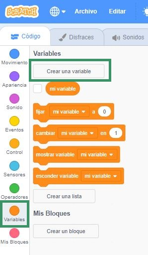
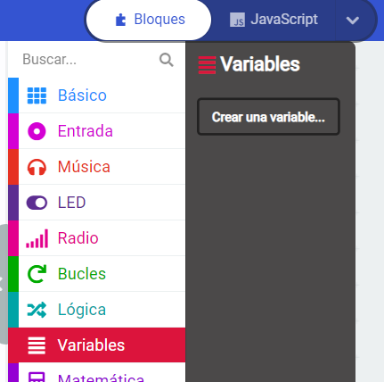

Scratch
En Scratch se define una variable haciendo clic en la opción crear una variable que se encuentra en la categoría de bloques llamada Variables.
El tipo de una variable de Scratch se determina cuando se almacena el primer valor en ella. Por ejemplo, si se crea una variable llamada estudiante y al inicio del programa se almacena el valor "Juan", entonces la variable será del tipo cadena de caracteres.

MakeCode
En MakeCode, al igual que en Scratch, para definir una variable se debe elegir la opción crear una variable alojada en la categoría de bloques llamada Variables.
El tipo de una variable de MakeCode se determina cuando se almacena el primer valor en ella. Por ejemplo, si se crea una variable llamada precio y al inicio del programa se almacena el valor 8, entonces la variable será del tipo entero.

Python
En Python se define una variable de la siguiente forma:
estudiante="Juan"
precio=8
En este ejemplo se están definiendo dos variables, una llamada estudiante y otra llamada precio. En la definición se determina el nombre, el primer valor que almacenará la variable y por consiguiente el tipo de la misma.
Debido a que en la variable llamada estudiante se almacenó el valor "Juan", el tipo será cadena de caracteres. Por otro lado, teniendo en cuenta que la variable precio posee el valor 8, se puede decir que su tipo será entero.